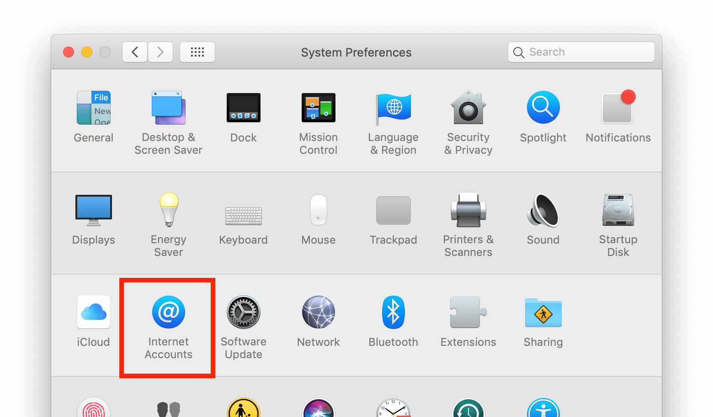

Синхронизација са macOS
Подесите своје налоге
У наредним корацима ћете додати ресурсе вашег сервера за CalDAV (Календар) и CardDAV (Контакте) у свој Nextcloud.
Отворите system preferences на вашем macOS уређају.
Идите на Internet Accounts:

Кликните на Add Other Account… и кликните на CalDAV Account за Календар или CardDAV Account за Контакте:

Белешка
Не можете заједно да подесите Календар/Контакте. Морате да их подесите у одвојеним налозима.
Изаберите Manual као Account-Type и откуцајте своје одговарајуће податке за пријаву:
Username: ваше Nextcloud корисничко име или и-мејл
Лозинка: ваша генерисана лозинка апликације/жетон (Сазнајте више).
Адреса сервера: URL вашег Nextcloud сервера (нпр.
https://cloud.example.com)

Кликните на Sign In.
За CalDAV (Календар): сада можете да изаберете апликацију којом желите да користите овај ресурс. У већини случајева ће то бити апликација „Calendar”, мада понекад можете да пожелите да га употребите са своју апликацију Tasks and reminders.

Решавање проблема
macOS не подржава синхронизовање CalDAV/CardDAV преко нешифрованих
http://веза. Обезбедите да јеhttps://укључен и подешен и на серверу и на клијенту.Самопотписани сертификати морају исправно да се подесе у macOS привеску кључева.